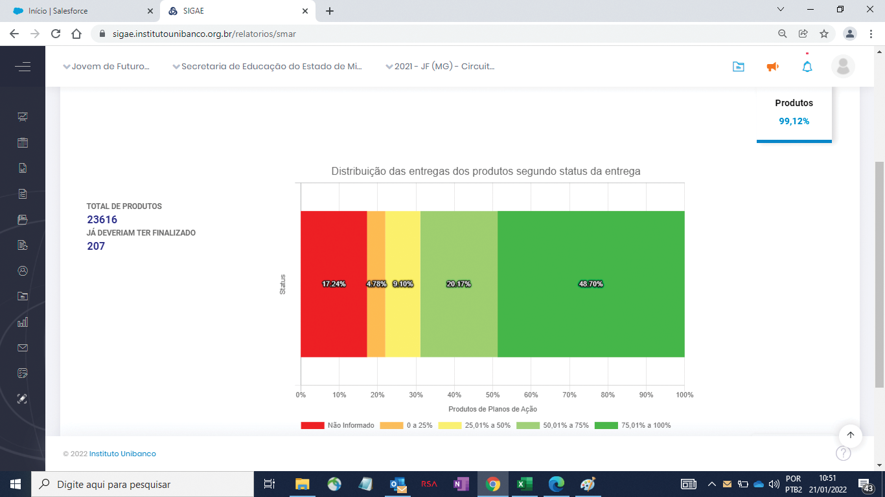
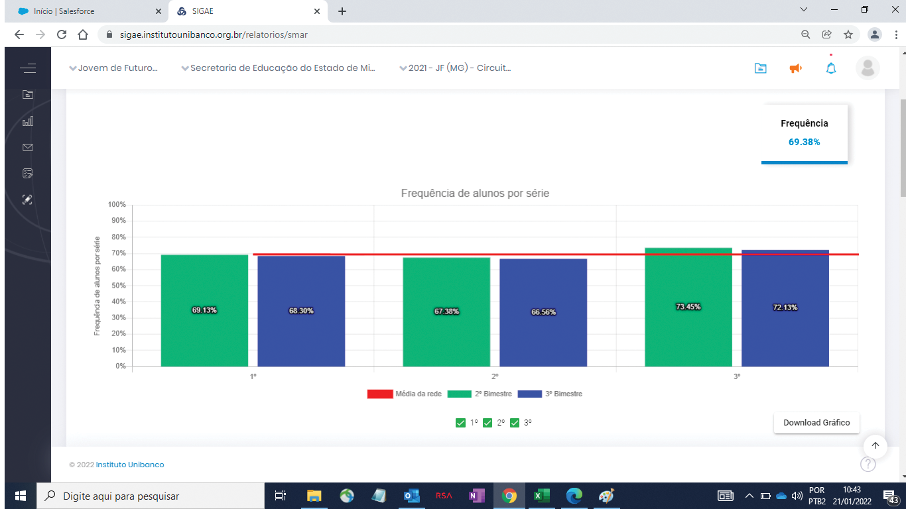
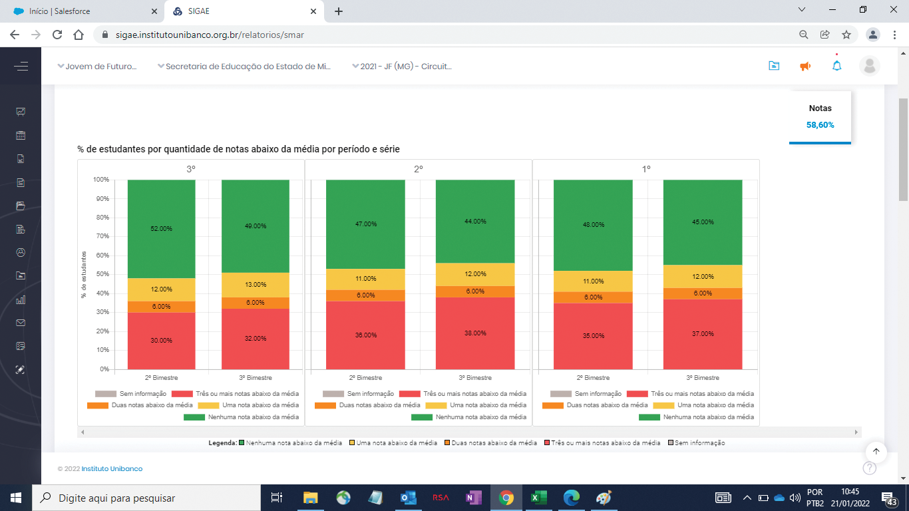
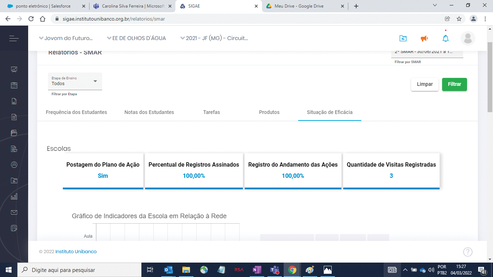
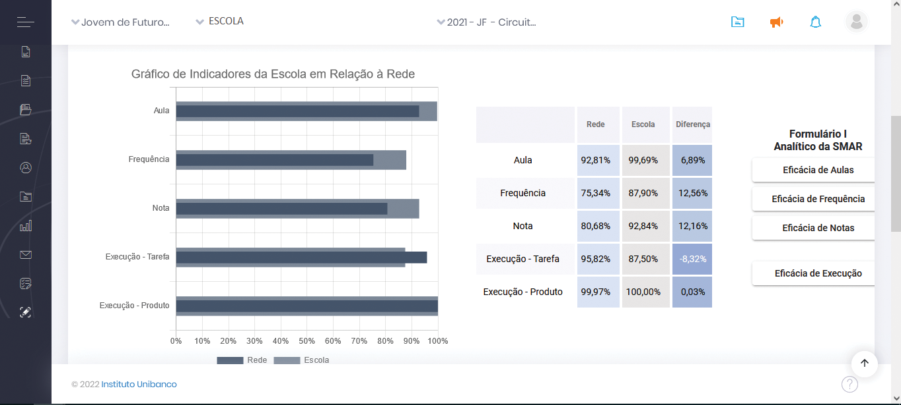
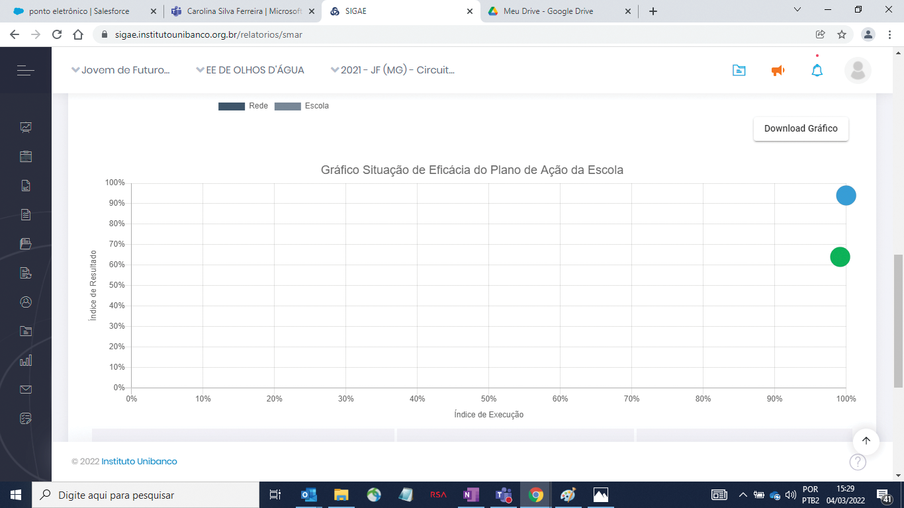

SMAR
1. A importância da SMAR
A SMAR (Sistemática de Monitoramento e Avaliação dos Resultados) verifica se as ações planejadas estão na direção correta ou se precisam de melhorias ou mudanças, que serão realizadas na próxima etapa: Correção de Rotas/Compartilhamento de Práticas. Os seis objetivos estratégicos são:
- Tornar a escola mais atrativa e inclusiva com a comunidade escolar atuante.
- Ter profissionais motivados e atualizados quanto às demandas educacionais.
- Fortalecer o regime de colaboração entre estado e municípios.
- Preparar os estudantes para o mercado de trabalho, alinhado ao seu projeto de vida
- Implantar modelos inovadores de gestão escolar e ter lideranças motivadas e qualificadas.
- Garantir a continuidade da aprendizagem para todos os níveis e etapas, da educação básica ao ensino superior.
É essencial refletir sobre questões raciais e de gênero, identificar grupos vulneráveis e planejar ações para corrigir desigualdades de aprendizagem. Os encontros da SMAR proporcionam reflexões individuais e coletivas, ampliando a capacidade das escolas, das SREs e da SEE de garantir o direito de aprender e se desenvolver de cada estudante mineiro.
Na SMAR, as instâncias (SEE, SREs e escolas) avaliam a execução dos Planos de Ação e os Indicadores Estruturantes com base em evidências. O objetivo é verificar se as ações planejadas estão sendo executadas corretamente e se os resultados estão alinhados com as expectativas. Caso contrário, identificam-se as causas e realizam-se ajustes. Por isso, a SMAR (Sistemática de Monitoramento e Avaliação dos Resultados) é fundamental para a etapa de Correção de Rotas/Compartilhamento de Práticas e para o atingimento dos objetivos estratégicos da rede de ensino.
É com base nas evidências analisadas na SMAR que se faz as correções necessárias no Plano de Ação.
2. Conceitos Básicos da SMAR
Na SMAR, dois índices importantes são analisados: de Execução e de Resultado.
2.1. Índice de Execução
A análise da execução do Plano de Ação verifica:
- Se as instâncias estão seguindo o planejamento.
- Se o planejamento é adequado à realidade.
- Dificuldades na execução das ações.
O grau de execução é um resultado das tarefas e produtos do Plano de Ação. Manter o Sigae atualizado é essencial.
Tarefas: detalham cada ação do Plano, estipulando cronogramas. Sem a execução das tarefas, a ação não é realizada.
Produtos: são as entregas das ações previstas, definidas em termos mensuráveis. Mesmo que as tarefas sejam executadas, é necessário registrar se os produtos são entregues. Sem produtos, a ação não se conclui e não há resultados.
2.2. Índice de Resultado
Indica o avanço, manutenção ou retrocesso em direção aos objetivos estratégicos. É mensurado por evidências quantitativas e qualitativas relacionadas a:
- Vínculo/acesso dos estudantes;
- Aprendizagem;
- Redução das desigualdades educacionais.
Na SMAR, os resultados são medidos por Indicadores Estruturantes e evidências qualitativas observadas na execução do Plano de Ação.
3. Como elaborar o Exercício Prévio da SMAR e preparar a reunião de Nível 1 (N1) da SMAR
Antes da reunião de SMAR N1 com o Inspetor Escolar, a dupla gestora da escola deve reunir o Grupo Gestor para realizar um exercício analítico, conforme orientações deste roteiro, e fazer os registros necessários. Utilize os espaços do Conselho de Classe e/ou Módulo II para analisar e dialogar sobre os resultados do período.
3.1. Apropriação do Roteiro
Aproprie-se do roteiro do Exercício Prévio, atentando-se para as Tabelas 6 e 7, que poderão ser utilizados pelo Inspetor Escolar durante a SMAR N1. Para facilitar o exercício, a SEE criou um Google Forms, contendo toda a estrutura do Exercício Prévio da SMAR. Esse formulário será sempre compartilhado com as regionais e escolas antes da realização do exercício. Após a reunião, finalize os registros e poste-os no Sigae. Sistematize as práticas exitosas para inspirar outras escolas e potencializar os aprendizados coletivos. Peça ao Grupo Gestor que registre esses aprendizados para compartilhamento na etapa de Correção de Rotas/Compartilhamento de Práticas.
TABELA 6 - Consolidado para SMAR e CR
| EFICÁCIA | RESULTADOS | EXECUÇÃO | ||
|---|---|---|---|---|
| Frequência dos estudantes | Notas dos estudantes | Aulas dadas | Execução das tarefas e entrega dos produtos | |
|
Pontos fortes |
||||
|
Pontos críticos |
||||
|
Ideias para aumentar e/ou melhorar a execução do Plano (tarefas e produtos) |
||||
|
Ideias para ajustes nas ações do Plano |
||||
|
Ideias para novas ações |
||||
|
Ações em andamento (que estão gerando resultados positivos) |
||||
|
Demandas para a SRE |
||||
|
Demandas para a SEE |
||||
|
Articulações necessárias |
||||
3.2. Análise dos Processos Cruciais
Avalie como estão os Processos Cruciais na escola, focando no registro das informações e na coleta de dados. Como sugestão, você pode usar a Tabela 7 - Registro de Práticas, apropriada para esta análise.
TABELA 7 - Registro de Práticas
| NOME DA PRÁTICA | EXECUÇÃO |
|---|---|
|
O IDEAL
|
|
|
O REAL
|
|
|
OBJETIVO ESTRATÉGICO RELACIONADO
|
|
|
PARA QUEM?
|
|
|
O CAMINHO
|
|
|
OS RESULTADOS/EFEITOS DA PRÁTICA |
|
|
PRÓXIMOS PASSOS
|
3.3. Análise dos Relatórios da SMAR no Sigae
Explore os relatórios no Sigae usando os filtros de turnos, turmas e componente curricular. Avalie os Índices de Execução e de Resultado, considerando o período avaliado. No final, observe outras evidências relevantes para a avaliação na SMAR.
Os relatórios da SMAR são:
- Tarefas
- Produtos
- Aulas dadas
- Frequência
- Notas
- Situação de Eficácia do Plano de Ação
3.4. Importância do Registro Sistemático
O registro sistemático, fidedigno e de qualidade dos dados e informações é essencial para a análise. Isso permite que a escola fundamente suas ações, atue adequadamente sobre os problemas, alcance os objetivos pretendidos e garanta transparência e prestação de contas à comunidade escolar e à rede como um todo.
|
Dicas para reconhecer as características de práticas exitosas:
Práticas explicitamente focalizadas e dirigidas ao alcance dos objetivos estratégicos da rede:
Práticas que implicam os professores, estudantes e outros profissionais da comunidade escolar, garantindo a participação nos processos de discussão e decisão da escola. Práticas que articulam as medidas das avaliações externas com os propósitos e o projeto educativo da escola e da rede. Práticas promotoras de um bom ambiente de trabalho e de um clima positivo. Práticas promotoras do engajamento dos professores e estudantes. |
Para auxiliar você, Inspetor Escolar, há abaixo a Tabela 8 com dimensões e tópicos a serem analisados previamente à SMAR N1.
Tabela 8 para análise de dimensão de tópicos
| DIMENSÃO | TÓPICOS |
|---|---|
|
Registros da execução do Plano de Ação (vide Sigae) |
Cumprimento dos prazos de postagem: Há ações e tarefas atrasadas? Qualidade das informações registradas: Elas correspondem à realidade? |
|
Execução do Plano de Ação da escola (Acompanhamento do PC e da VT) |
Cumprimento dos prazos: Os profissionais responsáveis pelas tarefas cumpriram os prazos? Qualidade da realização das ações e tarefas: Como você avalia a qualidade do Plano de Ação? Quais são as evidências que justificam essa avaliação? |
|
Registros no SIMADE/DED |
Cumprimento dos prazos de postagem:
|
|
Resultados das escolas (vide Sigae | Gráficos da SMAR) |
Indicadores Estruturantes:
|
|
Eficácia do Plano de Ação da escola (vide Sigae | Gráficos da SMAR) |
A Situação de eficácia do Plano de Ação da escola se enquadra em:
|
4. Relatórios da SMAR
A SMAR gera informações e dados que podem ser analisados por meio de relatórios extraídos do Sigae. Esses relatórios focam na execução do Plano de Ação e nos resultados das escolas que implementam o programa a cada ciclo do CdG.
Relatórios gerados na escola:
- Tarefas
- Produtos
- Aulas dadas
- Frequência
- Notas
- Situação de Eficácia do Plano de Ação
4.1. Tarefas
O relatório de Tarefas no Sigae mostra um gráfico com os percentuais de distribuição das tarefas do Plano de Ação da escola por status:
- Vermelho: Não iniciada
- Amarelo: Atrasada
- Cinza: Em andamento
- Verde claro: Concluída com atraso
- Verde escuro: Concluída
No canto superior direito, há o percentual de execução das tarefas concluídas, concluídas com atraso e em andamento, em relação ao total de tarefas previstas no Plano de Ação no período analisado.

4.2. Produtos
O relatório de Produtos no Sigae gera um gráfico com percentuais que indicam a entrega dos produtos do Plano de Ação da escola por intervalo.
Interpretação do Gráfico
- Vermelho: Não informado
- Amarelo: 0 a 25%
- Cinza: 25,01 a 50%
- Verde claro: 50,01 a 75%
- Verde escuro: 75,01 a 100%
No canto superior direito, há o percentual de produtos 100% entregues em relação ao total previsto no período analisado.

Atualização no Sigae
Ao atualizar o percentual de entrega dos produtos no Sigae, também atualize o resultado conforme o status:
- Total: 75,01% a 100%
- Parcial: 25,01 a 75%
- Não iniciado: 0 a 25%
4.3. Aulas Dadas
O relatório de Aulas Dadas no Sigae gera um gráfico mostrando os percentuais de aulas dadas pela escola durante o período analisado em cada SMAR.
Como Interpretar o Gráfico
- Barras: representam o percentual de aulas dadas por mês, diferenciadas por cores para cada ano do Ensino Médio Parcial e do Integral (1º, 2º e 3º anos).
- Linha Horizontal Azul: indica a média de aulas dadas considerando todas as escolas que implementam o programa Jovem de Futuro.
- Filtros Disponíveis: permitem acessar informações específicas, como componente curricular e turma.
- Campo Superior Direito: mostra o percentual total de aulas dadas pela escola em relação ao total previsto no período analisado.

Notas Importantes
- A apresentação mensal do gráfico depende do formato de disponibilização dos dados pela SEE. Se os dados forem fornecidos bimestralmente, a visualização mensal não será possível.
4.4. Frequência
O relatório de Frequência dos Estudantes, disponível no Sigae, apresenta um gráfico com os percentuais de frequência dos estudantes por ano de escolaridade (1º, 2º e 3º anos) durante o período analisado em cada SMAR.
Entendendo o Gráfico
- Barras: representam o percentual de frequência dos estudantes por ano de escolaridade e bimestre;
- Linha Horizontal Vermelha: indica a média de frequência dos estudantes das escolas que implementam o programa Jovem de Futuro na rede.
Funcionalidades
- Filtros Disponíveis: ano, componente curricular e turma.
- Campo Superior Direito: exibe o percentual total de frequência dos estudantes da escola em relação ao total previsto para o período analisado.

4.5. Notas
O relatório de Notas dos Estudantes no Sigae gera um gráfico com a distribuição dos estudantes por quantidade de notas abaixo da média a cada ciclo de SMAR nas escolas.
Como Interpretar o Gráfico
- Barras: Representam a distribuição dos estudantes de acordo com a quantidade de notas abaixo da média, por ano de escolaridade (1º, 2º, e 3º anos) e por bimestre.
- Verde: Nenhuma nota abaixo da média
- Amarelo: 1 nota abaixo da média
- Laranja: 2 notas abaixo da média
- Vermelho: 3 ou mais notas abaixo da média
- Cinza: Sem informação

- Filtros Disponíveis: permitem acessar informações específicas, como componente curricular e turma.
- Campo Superior Direito: mostra o percentual de estudantes com nenhuma nota abaixo da média e com 1 nota abaixo da média, em relação ao total de estudantes da escola.
4.6. Situação de Eficácia do Plano de Ação
O relatório de Situação de Eficácia do Plano de Ação no Sigae combina os índices de Execução e Resultado, gerando cartões e gráficos com informações detalhadas sobre a implementação do plano.
Informações dos Cartões
- Postagem do Plano de Ação;
- Percentual de Registros de Reuniões Assinados;
- Percentual de Registros do Andamento das Ações;
- Quantidade de Visitas e Pontos de Checagem.

Gráficos Gerados
- Indicadores da Escola em Relação ao Conjunto de Escolas:
- Compara a média da escola com outras que implementam o programa Jovem de Futuro.
- Considera os índices de Resultado (aulas dadas, frequência e notas dos estudantes) e de Execução (tarefas e produtos).
- Percentuais dos indicadores são mostrados em uma tabela ao lado do gráfico.

2. Gráfico de Situação de Eficácia do Plano de Ação
O gráfico de Situação de Eficácia do Plano de Ação mostra a classificação da escola quanto à eficácia do Plano de Ação, considerando os índices de Execução e Resultado.
Entendendo o Gráfico
- Bolinha Azul: Índices de Execução e Resultado da escola.
- Bolinha Verde: Média dos índices das escolas que implementam o programa Jovem de Futuro.
Se a bolinha azul estiver abaixo da verde, a escola está com índices de Execução e Resultado abaixo da média da rede, indicando uma situação de baixa eficácia.
Classificações de Eficácia
- Alto grau de execução com resultado positivo:
- Índice de execução maior ou igual a média da rede
- Índice de resultado maior ou igual a média da rede
- Alto grau de execução com resultado abaixo do esperado:
- Índice de execução maior ou igual a média da rede
- Índice de resultado menor que a média da rede
- Baixo grau de execução e resultado positivo:
- Índice de execução menor que a média da rede
- Índice de resultado maior ou igual a média da rede
- Baixo grau de execução com resultado abaixo do esperado:
- Índice de execução menor que a média da rede
- Índice de resultado menor que a média da rede

5. Como realizar a SMAR N1?
Dialogue sobre os resultados do período, a eficácia das ações, demandas de apoio para a SRE e SEE, e pontos para Correção de Rotas e Compartilhamento de Práticas. Mobilize gestores a conhecerem os estudantes e suas condições de vida para implementarem práticas pedagógicas que promovam pertencimento e identifiquem adversidades. Utilize erros como oportunidades de aprendizagem, fortaleça as relações e celebre as conquistas coletivas.
Avalie o andamento do registro e da coleta de dados. Anote os destaques para registrar no Sigae e contribuir na SMAR N2. Reforce a importância de registros precisos e com qualidade. Registros sistemáticos e fidedignos são essenciais para que a escola se veja refletida nos relatórios da SMAR e tome decisões assertivas.
Esses registros permitem que a escola fundamente as suas ações, atue sobre seus problemas e alcance os objetivos pretendidos, além de garantir transparência na prestação de contas à comunidade escolar e à rede de ensino.
Além disso, é importante avaliar a execução das ações e o desempenho dos Indicadores Estruturantes, como aulas dadas, frequência e notas.
Use dados de avaliações externas (Diagnóstica, Trimestral ou Processual) para entender o domínio de conteúdos e habilidades dos estudantes. Peça ao Grupo Gestor que identifique e registre práticas exitosas para compartilhamento. Oriente sobre a finalização dos registros, o envolvimento da comunidade escolar e a divulgação dos resultados.
|
Dicas para reconhecer práticas exitosas: As práticas exitosas focam no estudante e se alinham aos objetivos estratégicos da rede, como garantir a aprendizagem, reduzir desigualdades de aprendizagem e mitigar o abandono e a evasão dos estudantes. Envolvem professores, estudantes e a comunidade escolar em processos de discussão e decisão, integram resultados de avaliações externas com os objetivos educacionais da escola e da rede, promovem um ambiente de trabalho positivo e incentivam o engajamento de professores e estudantes no processo de ensino e aprendizagem. |
A Tabela 9 apresenta um roteiro de perguntas para orientar a SMAR N1.
TABELA 9
| DIMENSÃO | TÓPICOS |
|---|---|
|
Registros da execução do Plano de Ação (vide Sigae) |
Cumprimento dos prazos de postagem: Há ações e tarefas atrasadas?
|
|
Execução do Plano de Ação da escola (Acompanhamento do PC e da VT) |
O Plano de Ação está sendo executado no prazo? Se não, por quê?
|
|
Registros no SIMADE/DED |
Cumprimento dos prazos de postagem: Os prazos foram cumpridos pela escola? |
|
Resultados das escolas Frequência dos estudantes (vide Sigae | Gráficos da SMAR) |
Há algum componente curricular com menor frequência dos estudantes? Qual é? Por quê? Os resultados de frequência sinalizam possíveis grupos com propensão ao abandono? Quais são esses grupos? De modo geral, as ações executadas pela escola, conforme seu Plano de Ação, garantiram a frequência dos estudantes? Vocês identificam alguma ação que não esteja registrada no Plano e que influenciou positivamente a frequência dos estudantes? Quais os pontos críticos com relação à manutenção do vínculo dos estudantes com a escola? E os positivos? Há demandas a serem feitas à SRE e/ou SEE com relação a esse indicador? |
|
Resultados da escola Aulas dadas ( vide Sigae | Gráficos da SMAR) |
Como avaliam o percentual de aulas dadas no período analisado? Que leituras são possíveis ao relacionar o percentual de aulas dadas com a frequência dos estudantes? As ações executadas contribuíram para melhorar as condições de oferta de ensino, pensando no trabalho dos gestores pedagógicos e dos professores? As ações executadas contribuíram para melhorar as condições de oferta de ensino para os estudantes? Quais os pontos críticos com relação às condições de oferta de ensino para os estudantes? E os positivos? Há demandas a serem feitas à SRE e/ou SEE com relação a esse indicador? |
|
Resultados da escola Notas dos estudantes (vide Sigae | Gráficos da SMAR) |
O percentual de estudantes da escola sem notas e/ou com notas abaixo da média para aprovação é alto? Por quê? |
|
Avaliações externas (vide SIMAVE) |
Como vocês avaliam os dados das avaliações externas da escola? |
|
Eficácia do Plano de Ação da escola Alto grau de execução com resultado positivo |
Que ações do Plano podem ter impactado mais para se ter esse resultado? Quais práticas podem ser compartilhadas com as demais unidades escolares da SRE? |
|
Eficácia do Plano de Ação da escola Alto grau de execução com resultado abaixo do esperado |
Que fatores contribuíram para que, apesar do alto grau de execução (realização das ações e entrega dos produtos), as ações não gerassem os resultados esperados? |
|
Eficácia do Plano de Ação da escola Baixo grau de execução e resultado positivo |
Que fatores contribuíram para que o resultado da escola fosse positivo, apesar da execução estar abaixo do esperado? |
|
Eficácia do Plano de Ação da escola Baixo grau de execução com resultado abaixo do esperado |
Por quais razões o Plano de Ação não foi executado conforme o previsto? Os resultados abaixo do esperado estão relacionados unicamente a não execução do Plano? Ou há outro fator? Há ideia para a mudança desse cenário? Há demandas para SEE e/ou SRE que podem auxiliar a escola no alcance dos objetivos? |
|
Redução das desigualdades |
No Plano de Ação, a escola contemplou ações para a redução das desigualdades (raciais, de gênero, de grupos mais vulneráveis)? Se não, a partir das evidências, o que se propõe? |
Use as informações coletadas na SMAR | N1 como subsídio para a SMAR | N2, abordando perguntas sobre desempenho, avaliação de resultados, hipóteses para diferenças, necessidades de apoio, atenção aos componentes curriculares, diferenças entre turnos e demandas para a SRE e SEE.
|
Atenção Consolide as produções da SMAR N1 e disponibilize-as para a SRE na SMAR N2, influenciando o compartilhamento de práticas e a revisão do Plano de Ação da SRE. A SMAR N2 é o segundo evento da SMAR e acontece nas SREs, sendo realizado nos Ciclos 1 e 2, pelo Grupo Gestor da SRE, Inspetores Escolares e o servidor da SRE responsável pelo EMTI. |
6. Perguntas frequentes sobre a SMAR
-
Como acessar os relatórios da SMAR?
A SMAR gera informações e dados que podem ser analisados por meio de relatórios extraídos do Sigae, como foco na execução do Plano de Ação e nos resultados do conjunto das escolas que implementam o Jovem de Futuro na rede, a cada ciclo do Circuito de Gestão (CdG). Para acessar o sistema do Sigae, é necessário ir para a página: HTTPS://SIGAE.INSTITUTOUNIBANCO.ORG.BR/PORTAL/LOGIN
-
Como analisar os relatórios da SMAR?
Você pode acessar os relatórios da SMAR pelo Sigae, que tem filtros que ajudam na análise, como turno, turmas e componente curricular. É importante analisar os relatórios levando em conta o período da SMAR e todas as evidências relevantes do contexto escolar.
-
Qual o objetivo da Reunião SMAR N1? Quem participa?
A SMAR N1 é um encontro entre o Inspetor Escolar, o Grupo Gestor da escola e o servidor da regional responsável pelo Ensino Médio em Tempo Integral (se a escola for EMTI). Nesse encontro, todos conversam sobre os resultados do período, focando nos Índices de Execução e de Resultado. Essa discussão ajuda a identificar melhorias para a próxima etapa do Circuito de Gestão (CdG), que é a Correção de Rotas/Compartilhamento de Práticas.
Participam da N1:
- Grupo Gestor da escola
- Inspetor Escolar
- Servidor da SRE responsável pelo EMTI (se for o caso)
-
Como realizar a reunião de SMAR N1?
Para fazer a SMAR N1, o Inspetor Escolar precisa analisar os relatórios da escola no Sigae. O Grupo Gestor da escola também deve se preparar para a reunião, realizando o Exercício Prévio à SMAR N1. Assim, durante o encontro, todos vão conseguir conversar melhor sobre os resultados do período, a eficácia das ações do Plano, e as demandas e necessidades de apoio das Regionais e da Secretaria. Também é uma boa oportunidade para levantar pontos importantes para a Correção de Rotas/Compartilhamento de Práticas. Além disso, é crucial identificar desafios, celebrar os resultados e avançar com base nos aprendizados e nas oportunidades que surgirem.
-
Como inserir os registros da SMAR N1?
Para registrar SMAR N1 ou algum outro evento do Circuito de Gestão (CdG) no Sigae, considere dois acessos diferentes: pela agenda no Painel de Controle ou pelo Calendário, clicando em Agenda no Menu lateral. Ao localizar o evento, clique na barra onde ele está listado para ser direcionado à página de Registro. Na página do evento, escolha “Editar” os dados gerais ou inicie o “Registro” imediatamente.
Após clicar em "Registro", confirme os dados de Data/Hora e, se aplicável, o Local. Informe os participantes que compareceram. Registre os pontos de pauta do evento, usando a orientação ao lado da caixa de texto para auxiliar no preenchimento. Anexe arquivos, se desejar, nos formatos Word, Excel, PowerPoint ou PDF. Informe os encaminhamentos do evento, clicando em “Novo Encaminhamento” e especificando a atividade, responsável, data de início e término.
Com todas as informações registradas, clique em "Concluir" para finalizar o registro.